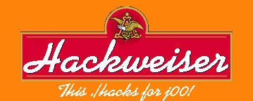

<!doctype html public "-//w3c//dtd html 4.0 transitional//en">
<html>
<head>
   <Global Domination at its finest since 2K,
												-Hackweiser>
   <meta http-equiv="Look Mom, No RDS!" content="100% msadc2.pl Free">
   <meta name="AUTHOR" content="The Real Slim Shady">
   <meta name="GENERATOR" content="Hackzilla/4.7 [en] (Hacknix; U) [Hackscape]">
   <title>Hacked.</title>
<World Domination at its finest since 2K
                                           -Hackweiser>
</head>
<body text="#FF0000" bgcolor="#FF9900" link="#0000EE" vlink="#551A8B" alink="#FF0000">
&nbsp;
<center>
<p></center>

<p><br>
<br>
<br>
<br>
<br>
<p><b><font color="#FF0000"><font size=+2>T</font><font size=+1>his Enlightenment
was brought to you by...</font></font></b>
<br><font face="Times New Roman,Times"><font color="#FFFFFF">&nbsp;&nbsp;&nbsp;&nbsp;&nbsp;&nbsp;&nbsp;&nbsp;&nbsp;&nbsp;&nbsp;&nbsp;&nbsp;</font><font color="#FF0000">&nbsp;&nbsp;&nbsp;&nbsp;&nbsp;&nbsp;&nbsp;&nbsp;&nbsp;&nbsp;

</font><i><font color="#FFFF00"><font size=+3>JohnA</font></font></i></font>
<br>&nbsp;&nbsp;&nbsp;&nbsp;&nbsp;&nbsp;&nbsp;&nbsp;&nbsp;&nbsp;&nbsp;&nbsp;&nbsp;&nbsp;&nbsp;&nbsp;&nbsp;&nbsp;&nbsp;&nbsp;&nbsp;&nbsp;&nbsp;&nbsp;&nbsp;&nbsp;&nbsp;&nbsp;&nbsp;&nbsp;&nbsp;&nbsp;&nbsp;&nbsp;&nbsp;&nbsp;&nbsp;&nbsp;&nbsp;&nbsp;&nbsp;&nbsp;&nbsp;&nbsp;&nbsp;
<b><i><font color="#FF0000">Of</font><font color="#FFFF00"> <font size=+2>H</font><font size=+1>ackweiser,
</font></font></i></b><i><font color="#FFFF00"><font size=+1>Global Domination
at its Finest.</font></font></i>
<br>&nbsp;
<p><b><i><u><font color="#FF0000">*IMPORTANT INFORMATION FOR THE SURFERS*</font></u></i></b>
<br><font color="#FFFFFF">The site you came for can be found <a href="index2.html">HERE</a>.&nbsp;
However, please take some time to</font>
<br><font color="#FFFFFF">hear what I have to say, thanks.</font>
<p><b><i><u><font color="#FF0000">*IMPORTANT INFORMATION FOR THE ADMINISTRATOR*</font></u></i></b>
<br><font color="#FFFFFF">The original page was renamed and placed <a href="index2.html">HERE</a>.</font>
<br><font color="#FFFFFF">No damage was done to the server and no sensitive
information was published.</font>
<br><font color="#FFFFFF">I patched the hole I came through (it was not
RDS/msadc), and you <i>should</i> be safe now.</font>
<br><font color="#FFFFFF">I apologize that it had to be you, but like I
said, NO damage was done.</font>
<br><font color="#FFFFFF">If you would like more information on how to
secure this server I would be</font>
<br><font color="#FFFFFF">happy to help you, email me <a href="mailto:foffe1@hushmail.com">HERE</a></font>
<br>
<hr WIDTH="100%">
<br>&nbsp;
<br>&nbsp;
<p><font color="#FFFF00"><font size=+2>W</font>hat is Napster?&nbsp; Napster
is (or soon if you don't help join the cause; '<i><u><font size=+1>was</font></u></i>')
a breakthrough program that binds several computers together into a "Mega
Server" that provides thousands of MP3's to its participants.&nbsp; When
a user signs onto Napster his computer becomes a part of that "Mega Server"
and gives other people access to his MP3 collection in exchange for access
to theirs.</font>
<br><font color="#FFFF00">Napster is the biggest and most powerful search
engine for MP3's and is in my opinion one of the Internet's greatest creations
and achievements.</font>
<p><font color="#FFFF00"><font size=+2>T</font>he RIAA, Metallica, and
Dr. Dre have been and still are filling legal suits against Napster and
its users simply because it can be used to find "illegal" music. This is
one of the most idiotic things I have ever seen.&nbsp; Napster is a resource,
just like Yahoo or the internet.&nbsp; If I use a search engine, Infoseek
for example, and look for kiddy porn, I bet ill find it.&nbsp; That's illegal,
why not sue Infoseek?&nbsp; Same thing with Napster.&nbsp;&nbsp; The RIAA,
Metallica, and Dr. Dre did this for money, but its ironic that this will
make them loose not only more money but fans as well.</font>
<p><font color="#FFFF00"><font size=+2>I</font> would like to include a
very good quote from
<i>pimpshiz </i>(another napster freedom fighter)
that expresses another side of this whole mess, that of the art and those
who create it:</font>
<br><font color="#000000">--------------------------------------------------------------------------------------------------------------------------</font>
<br><font color="#CC0000">"Music is art, an extension of ourselves. Major
label record companies do not sell art, they sell 50 cents of plastic at
$15 because they see music as an industry they can control. Maybe 5% of
your $15 will end up going to the artist. The artists (Metallica, Dre)
that complain about napster obviously care a great deal about the money
involved with their art, rather than the art itself. Perhaps because they
are also producers, in the business of selling 50 cents of plastic at $15?
Maybe.</font>
<p><font color="#CC0000">The RIAA is a joke. the RIAA does not represent
your favorite music artists. They represent rich record executives. These
are the fat cats who make profit from the other 95% of cd sales. These
people are so filthy rich, the only thing they know how to do is squabble
over how rich they are and how they don't want anything to happen to their
wealth and power. There's more to life than money fellas. Also may I say
I applaud the lawsuit bought by 26 states against the big 5 music labels
for cd price fixing and violating anti-trust laws. This is a great positive
step towards decentralization of power in these companies.</font>
<p><font color="#CC0000">"This I say to you, what I say is true: emotions
aren't a product to sell and cannot be consumed." (-Jesse Michaels) "</font>
<p><font color="#CC0000">&nbsp;&nbsp;&nbsp;&nbsp;&nbsp;&nbsp;&nbsp;&nbsp;&nbsp;&nbsp;&nbsp;&nbsp;&nbsp;&nbsp;&nbsp;&nbsp;&nbsp;&nbsp;&nbsp;&nbsp;&nbsp;&nbsp;&nbsp;&nbsp;&nbsp;&nbsp;&nbsp;&nbsp;&nbsp;&nbsp;&nbsp;&nbsp;&nbsp;&nbsp;&nbsp;&nbsp;&nbsp;&nbsp;&nbsp;&nbsp;&nbsp;&nbsp;&nbsp;&nbsp;&nbsp;&nbsp;&nbsp;&nbsp;&nbsp;&nbsp;&nbsp;&nbsp;&nbsp;&nbsp;&nbsp;&nbsp;&nbsp;&nbsp;&nbsp;&nbsp;&nbsp;&nbsp;&nbsp;&nbsp;&nbsp;&nbsp;&nbsp;&nbsp;&nbsp;&nbsp;&nbsp;&nbsp;&nbsp;&nbsp;&nbsp;&nbsp;&nbsp;&nbsp;&nbsp;&nbsp;&nbsp;&nbsp;&nbsp;&nbsp;&nbsp;&nbsp;&nbsp;&nbsp;&nbsp;&nbsp;&nbsp;&nbsp;&nbsp;&nbsp;&nbsp;&nbsp;&nbsp;&nbsp;&nbsp;&nbsp;&nbsp;&nbsp;&nbsp;&nbsp;&nbsp;&nbsp;&nbsp;&nbsp;&nbsp;&nbsp;&nbsp;&nbsp;&nbsp;&nbsp;&nbsp;&nbsp;&nbsp;&nbsp;&nbsp;&nbsp;&nbsp;&nbsp;&nbsp;&nbsp;&nbsp;&nbsp;&nbsp;&nbsp;&nbsp;&nbsp;&nbsp;&nbsp;&nbsp;&nbsp;&nbsp;&nbsp;&nbsp;&nbsp;&nbsp;&nbsp;&nbsp;&nbsp;&nbsp;&nbsp;&nbsp;&nbsp;&nbsp;&nbsp;&nbsp;&nbsp;&nbsp;&nbsp;&nbsp;&nbsp;&nbsp;&nbsp;&nbsp;&nbsp;&nbsp;&nbsp;&nbsp;&nbsp;&nbsp;&nbsp;&nbsp;&nbsp;&nbsp;
-Pimpshiz</font>
<br><font color="#000000">--------------------------------------------------------------------------------------------------------------------------</font>
<br>&nbsp;
<p><font color="#FFFF00">Im not asking you to start defacing web sites
to spread the message, But here are some things YOU can do to help and
become a Napster freedom fighter!</font>
<p><font color="#FFFF00">1)Simply write/email your local congress person
and express your concern and let them know that you want this fixed!</font>
<p><font color="#FFFF00">2)Boycott the bands who are doing this!</font>
<p><font color="#FFFF00">3)Read into the Napster matter yourself, you be
the judge, and take a stand!&nbsp; Im not going to tell you what's right
or wrong, these are just my opinions.</font>
<p><font color="#FFFF00">4)Tell your friends.</font>
<p><font color="#FFFF00">5)Praise/support and email the following groups,
They SUPPORT Napster.</font>
<p><font color="#FFFF00">3D House of Beefl</font>
<br><font color="#FFFF00">Anti-pop Consortium</font>
<br><font color="#FFFF00">Ben Folds Five</font>
<br><font color="#FFFF00">Chuck D</font>
<br><font color="#FFFF00">Billy Corgan-(Smashing Pumpkins)</font>
<br><font color="#FFFF00">The Coup</font>
<br><font color="#FFFF00">Cypress Hill</font>
<br><font color="#FFFF00">Danielle Howle</font>
<br><font color="#FFFF00">DJ Assault</font>
<br><font color="#FFFF00">DJ Keoki</font>
<br><font color="#FFFF00">DJ Spooky</font>
<br><font color="#FFFF00">Dr. Octagon</font>
<br><font color="#FFFF00">Elwood</font>
<br><font color="#FFFF00">Eve 6l</font>
<br><font color="#FFFF00">Face to Face</font>
<br><font color="#FFFF00">The Get Up Kids</font>
<br><font color="#FFFF00">Less Than Jakel</font>
<br><font color="#FFFF00">Limp Bizkit</font>
<br><font color="#FFFF00">Marianne Faithfull</font>
<br><font color="#FFFF00">Mix Master Mike</font>
<br><font color="#FFFF00">Mustard Plug</font>
<br><font color="#FFFF00">Nextmen</font>
<br><font color="#FFFF00">Peter Searcy</font>
<br><font color="#FFFF00">The Offspring</font>
<br><font color="#FFFF00">The Pilfers</font>
<br><font color="#FFFF00">Princess Superstar</font>
<br><font color="#FFFF00">Problem Addict</font>
<br><font color="#FFFF00">Radiohead</font>
<br><font color="#FFFF00">Sister Machine Gun</font>
<br><font color="#FFFF00">Social Distortion</font>
<br><font color="#FFFF00">Sunny Day Real Estate</font>
<br>&nbsp;
<br>&nbsp;
<br>&nbsp;
<br>&nbsp;
<br>&nbsp;
<br>&nbsp;
<p><font color="#FFFF00">Thanks, I hope you will do what is best not only
for the internet but society as well, I appreciate your help!</font>
<p><font color="#FF0000">-JohnA</font>
<br>&nbsp;
<p><font color="#000000">Here is a message my little brother (12) received
just because he had downloaded "Enter Sandman" by Metallica. 1 month before
they filled their case.&nbsp; What's a 12 year old boy to do when he gets
something like this?</font>
<br>&nbsp;
<p><font color="#000000">Notice of Alleged Infringement and Counter Notification</font>
<br>&nbsp;
<p><font color="#000000">Notification Of Allegation Of Infringement</font>
<p><font color="#000000">The band Metallica has requested that your access
to Napster be terminated</font>
<br><font color="#000000">for alleged copyright infringement. Please read
this entire notice carefully.</font>
<p><font color="#000000">On Thursday, May 4 the band Metallica delivered
to Napster a computerized</font>
<br><font color="#000000">list of 311,377 user names alleged to be infringing
Metallica's copyrights.</font>
<br><font color="#000000">Metallica explained that these user names had
made available for others to</font>
<br><font color="#000000">download materials that Metallica claims infringed
its copyrights. Metallica</font>
<br><font color="#000000">has requested that, in accordance with Napster's
copyright policy, these</font>
<br><font color="#000000">users be banned from the Napster service.</font>
<p><font color="#000000">If your Napster software redirected you to this
page it is because Napster</font>
<br><font color="#000000">has received an allegation from Metallica (and
its related businesses</font>
<br><font color="#000000">Creeping Death Music and E/M Ventures) that your
user name or handle made</font>
<br><font color="#000000">available through the Napster system allegedly
infringing materials.</font>
<br><font color="#000000">Metallica stated to Napster that it considers
infringing materials to be:</font>
<br>&nbsp;
<p><font color="#000000">"only the songs and recordings originally included
on commercially released</font>
<br><font color="#000000">Metallica albums, and [to] not include so-called
bootleg Metallica</font>
<br><font color="#000000">recordings. Metallica makes no claim of copyright
infringement with respect</font>
<br><font color="#000000">to recordings of their songs made by fans at
Metallica live concerts."</font>
<br><font color="#000000">Metallica has provided Napster with your user
name asserting that you were a</font>
<br><font color="#000000">person who was making available the types of
allegedly infringing materials</font>
<br><font color="#000000">described above.</font>
<p><font color="#000000">Due to the nature of the documents delivered by
Metallica and the methods</font>
<br><font color="#000000">used in collecting Metallica's information, Napster
cannot itself determine</font>
<br><font color="#000000">whether or not the files that you were sharing
fell within the category</font>
<br><font color="#000000">described above that Metallica claims are infringing.
However, under the</font>
<br><font color="#000000">Digital Millennium Copyright Act, 17 U.S.C. Section
512(c)(3)(vi), Napster</font>
<br><font color="#000000">will disable access when, as here, it has received
a notice from a copyright</font>
<br><font color="#000000">holder claiming under penalty of perjury that
you have made available</font>
<br><font color="#000000">material infringing his rights.</font>
<p><font color="#000000">Policy for Counter Notification</font>
<p><font color="#000000">In compliance with the DMCA, 17 U.S.C. Section
512(g), Napster will reinstate</font>
<br><font color="#000000">any user who disputes Metallica's allegation
of infringement via a sworn</font>
<br><font color="#000000">"counter notification," and who after that counter
notification is provided to</font>
<br><font color="#000000">Metallica, is not sued by Metallica within ten
(10) business days.</font>
<p><font color="#000000">In order to submit a counter notification, you
must certify, under penalty of</font>
<br><font color="#000000">perjury that you have a good faith belief that
you were disabled as a result</font>
<br><font color="#000000">of Metallica's mistake or misidentification of
files you shared as</font>
<br><font color="#000000">infringing. Your account will remain blocked
unless and until you submit a</font>
<br><font color="#000000">sworn statement of all the information contained
in the "counter</font>
<br><font color="#000000">notification" form found below. That form must
include your full real name,</font>
<br><font color="#000000">address, Napster user name, and your consent
to being sued by Metallica in the</font>
<br><font color="#000000">federal court where you reside.</font>
<p><font color="#000000">If you supply a "counter notification" form, we
will send a copy of that</font>
<br><font color="#000000">"counter notification" to Metallica. We will
restore access to your account</font>
<br><font color="#000000">within 10 to 14 business days thereafter, unless
during that time our</font>
<br><font color="#000000">Designated Copyright Agent receives notice from
Metallica that it has filed a</font>
<br><font color="#000000">legal action against you seeking a court order
to restrain you from engaging</font>
<br><font color="#000000">in illegal activity.</font>
<p><font color="#000000">If you believe you have not in any way infringed
the copyrights of "Metallica</font>
<br><font color="#000000">songs or recordings originally included on commercially
released Metallica</font>
<br><font color="#000000">albums," and that you were designated by Metallica
by mistake or</font>
<br><font color="#000000">misidentification, you may choose to submit the
following sworn</font>
<br><font color="#000000">counter notification.</font>
<p><font color="#000000">&nbsp;Counter Notification Form</font>
<p><font color="#000000">ATTENTION: THIS FORM IS A LEGALLY BINDING DOCUMENT</font>
<p><font color="#000000">1.&nbsp; I hereby state under penalty of perjury
that I have a good faith belief</font>
<br><font color="#000000">that access to my account has been blocked as
a result of mistake or</font>
<br><font color="#000000">misidentification by Metallica of allegedly infringing
material made</font>
<br><font color="#000000">available by me through the Napster service,
and that I have not made</font>
<br><font color="#000000">available through the Napster service any songs
and recordings originally</font>
<br><font color="#000000">included on commercially released Metallica albums.</font>
<br>&nbsp;
<p><font color="#000000">I agree to the above and certify that my above
statement is true:</font>
<p><font color="#000000">Initial Here</font>
<br>&nbsp;
<p><font color="#000000">2a. True Legal Name</font>
<p><font color="#000000">&nbsp;&nbsp;&nbsp; First</font>
<br><font color="#000000">M</font>
<br><font color="#000000">Last</font>
<p><font color="#000000">&nbsp;b. Address</font>
<p><font color="#000000">&nbsp;&nbsp;&nbsp; Street Address</font>
<p><font color="#000000">&nbsp;&nbsp;&nbsp; City</font>
<br><font color="#000000">State</font>
<br><font color="#000000">Zip</font>
<br>&nbsp;
<p><font color="#000000">&nbsp;&nbsp;&nbsp; Country</font>
<br><font color="#000000">&nbsp;c. Email Address</font>
<p><font color="#000000">&nbsp;d. Phone</font>
<p><font color="#000000">&nbsp;e. Napster User name</font>
<br>&nbsp;
<p><font color="#000000">3. I hereby state that I consent to the jurisdiction
of the Federal District</font>
<br><font color="#000000">Court for the judicial district in which my address
is located or, if my</font>
<br><font color="#000000">address is outside of the United States, for
any judicial district in which</font>
<br><font color="#000000">Napster may be found, and I will accept service
of process from the</font>
<br><font color="#000000">complaining party who notified Napster of the
alleged infringement or an</font>
<br><font color="#000000">agent of such person.</font>
<p><font color="#000000">Initial Here</font>
<br>&nbsp;
<p><font color="#000000">4. Your electronic signature</font>
<br><font color="#000000">Please re-enter your full, true legal name to
electronically sign this</font>
<br><font color="#000000">document.</font>
<p><font color="#000000">&nbsp;&nbsp; Full Legal Name</font>
<br>&nbsp;
<p><font color="#000000">I agree the above is accurate under penalty of
perjury. Additionally, I agree</font>
<br><font color="#000000">that by submitting this form I am signing a binding
legal document.</font>
<br>&nbsp;
<br>&nbsp;
<br>&nbsp;
<br>&nbsp;
<br>&nbsp;
<p><font color="#000000">&nbsp;&nbsp;&nbsp; Copyright 1999-2000 Napster,
Inc.</font>
<br><font color="#000000">All rights reserved.</font>
<br><font color="#000000">*************************************************************</font>
<br>
<hr WIDTH="100%">
<br><font color="#FFFFFF"><font size=+4>F</font><font size=+3>or Fellow
Hackers...</font></font>
<br><font size=+2>N</font>ews:
<br><font color="#000000">I've been invited by phel0n to join Hackweiser,
so of course I accepted :-).&nbsp; I'm still gonna be hacking for the good
of the world, and nothing is really gonna change except for the hackweiser
tags you'll be seeing from now on.&nbsp;&nbsp; I'm sure you've read about
hackweiser on news sites around the world, most notably their strike on
one of the top search engines in Asia (goldenvillage.com) about Carnivore
(you can read more about that on my next deface).&nbsp; They are a very
competent group of skilled hackers that I can truly be proud to be called
a part of, Thanks guys.</font>
<center>
<p></center>

<p><br>
<br>
<br>
<br>
<p><font size=+2>N</font>ote:
<br><font color="#000000">Hmmm, that "Free Napster" pic I made didn't turn
out as well as I hoped it would.&nbsp; Please submit any cool</font>
<br><font color="#000000">or suitable pics you have made or found on the
net.&nbsp; Send em</font><font color="#990000"> <a href="mailto:foffe1@hushmail.com">HERE.</a></font>
<p><font size=+2>F</font>rom the inbox:
<br><font color="#000000">I got this the day after my previous tag, Thanks
m0rb!&nbsp;&nbsp; If anyone else has something they want to say that's
important, well written, supports the cause, or expresses a riotous reason,
please feel free to email me and I might post it!</font>
<br>&nbsp;
<p>Hey just emailing to say that the tag on www.*.com was one of the most
<br>intelligent ones I have seen. You are right up there with GForce Pak
and
<br>Pimpshiz. I hate looking at unintelligeble rants that go absolutely
nowhere.
<br>I frigging write articles up all day long about this company was hacked,
and
<br>this person did it and yadadada and you do not know how annoying it
gets
<br>when having to read something like: Dud3 y0ur s3rv34 sux. H4 h4 I 4m
c001.
<br>Gets on my nerves after awhile. Lol I have never seen that letter from
<br>Metallica either. Too ridiculous. How pissed was Lars at the MTV VMAs
when
<br>Sean Davis came out whering a Metallica t-shirt. Too funny. Oh crap
now I'm
<br>starting to rant. later dude. nice work. m0rb
<p><font size=+2>F</font>rom the channel:
<br><font color="#000000">And yet again, some more funny/stupid quotes
I logged&nbsp; from
<i>the
</i>channel, sorry didny have enough time to
log any great ones, maybe next time :-).</font>
<p><font color="#FF0000">[09:38] *** Topic is 'root-shell-hackers | Sexual
questions ARE Allowed to be Asked, and we WILL help'</font>
<br><font color="#FF0000">[09:38] *** Set by dobe on Wed Sep 13 00:58:45</font>
<p><font color="#FF0000">[06:34] &lt;Lynxwolf> blunts are good!</font>
<br><font color="#FF0000">[06:35] &lt;tcp_hype> weed is for dirty mexicans</font>
<br><font color="#FF0000">[06:35] &lt;TotalPh33r> lol</font>
<p><font color="#FF0000">[06:37] &lt;tcp_hype> I ain't about to get stupid
on expensive drugs for people that have money</font>
<br><font color="#FF0000">[06:37] &lt;NetLynx> i like cocacola.</font>
<br><font color="#FF0000">[06:37] &lt;tcp_hype> cat tranquilizers</font>
<p><font color="#FF0000">[18:24] &lt;Scurvy> I was dating an 8 year old
when I was 23.</font>
<br><font color="#FF0000">[18:24] &lt;JohnA> what?</font>
<br><font color="#FF0000">[18:24] &lt;frame> sicko</font>
<p>[19:49] * Death_Bytes is burnin cd's
<br>[19:50] &lt;frame> I burn my cd's outside
<br>[19:50] &lt;frame> the fumes and smoke bother my coworkers
<br>[19:50] &lt;JohnA> hehe
<br>[19:50] &lt;frame> and my boss is still pissed at me for burning down
half the office
<p>[20:15] &lt;frame> tNc: Windows isn't a virus. Viruses do something.
<p><font color="#FF0000">[20:46] *** Starman_Jones has quit IRC (Ping timeout)</font>
<br>[20:47] *** Starman_Jones has joined #*
<br>[20:48] &lt;Starman_Jones> FUCKING SERVER
<br>[20:48] &lt;Starman_Jones> IS FUCKING GAY
<br>[20:48] &lt;Starman_Jones> QUTI DISCONNECTING ME
<br>[20:48] &lt;Starman_Jones> !!!!!!!!!!!!!!!!!!!!!!!!!!
<br>[20:48] &lt;frame> hahaha
<br>[20:48] &lt;modify> ya SJ
<br>[20:48] &lt;modify> its your firewall or your anti hacking software
<br>[20:48] &lt;modify> its not accepting icmp pings
<br>[20:48] &lt;modify> it filters or blocks them
<br>[20:48] &lt;modify> so it pings timeouts
<br>[20:48] &lt;modify> and logs you out
<br>[20:48] &lt;modify> no need to get all mad..
<br>[20:48] &lt;frame> you leet m0f0
<p><font color="#FFFFFF">*You got greets this time B0OB :-)*</font>
<br>[21:07] &lt;B0OB> of course i dont get greets hehe but i get my convo
in there about sassy hehe
<p><font color="#FFFFFF">*You gotta love our server, its soooo forgiving*</font>
<br><font color="#FF0000">[06:26] *** initd_ was kicked by *.*.net (Flooding
(Limit is 8 lines per 9 seconds))</font>
<br><font color="#FF0000">[07:37] *** stain was kicked by *.*.net (Flooding
(Limit is 8 lines per 9 seconds))</font>
<br><font color="#FF0000">[07:37] &lt;rootproc> used to be 3 lines in 3
secs</font>
<br><font color="#FF0000">[07:37] &lt;bi0cide>&nbsp; god damn it *.*.net!@#</font>
<p><font color="#FFFFFF">*Modify just finnished telling us how you can
escape to a bash promt when a setuid program calls for the more command
and then this happens*</font>
<br>[21:30] *** modify was kicked by *.*.net (Flooding (Limit is 8 lines
per 9 seconds))
<br>[21:30] *** modify has joined #*
<br>[21:31] &lt;B0OB> LOL
<br>[21:31] &lt;modify> kick me off you beotch
<p>[21:33] &lt;JohnA-ReallyAway> Hootah: Im dcc'ing you the screen shot
you asked for...
<br>[21:33] &lt;JohnA-ReallyAway> Accept!
<br>[21:36] &lt;JohnA-ReallyAway> accept hooyah!
<br>[21:36] &lt;JohnA-ReallyAway> You know you want to
<br>[21:36] &lt;JohnA-ReallyAway> damn it
<br>[21:36] &lt;rootproc> sounds like a religion
<br>[21:37] &lt;rootproc> "Accept hooyah or be doomed to eternal damnation!"
<p>[22:02] &lt;gat0r> Did you hear about Microsoft's new hard drive? It
<br>[22:02] &lt;gat0r> has five millisecond access, fits in a PC-Card
<br>[22:02] &lt;gat0r> slot, and has UNLIMITED space.
<br>[22:02] &lt;gat0r> Unfortunately, they haven't finished formatting
it
<br>[22:02] &lt;gat0r> yet.
<br>&nbsp;
<p>[21:14] *** JohnA has quit IRC (Quit: Sir. Haxalot)
<br>&nbsp;
<br>&nbsp;
<p>
<hr WIDTH="100%">
<br><font color="#FFFFFF"><font size=+4>G</font><font size=+3>reets...</font></font>
<br><font color="#FF0000"><font size=+2>P</font>eople</font><font color="#000000">:</font>
<br><font color="#000000">Modify, Traze , SteeLe, Bighawk, Phel0n (thanks),
rootx11, gat0r, Scurvy (datagram's bitch), EvilClone (&lt;--crack fiend),
hooyah, Doom, B0OB, m0rb, dnr', lag, zenomorph, p4ntera^^, Fuqrag, Snagnbytz,
Frame, T-BoNe, datagram, sinfony, Initd_ , freon, Starman_Jones, Blade,
Striker_Man, Kreator, BabeK0a1a, Singh_, rootproc, Vortex, and Malikon.</font>
<p><font color="#FF0000"><font size=+2>C</font>auses I support</font><font color="#000000">:</font>
<br><font color="#000000">hacker (death to the mpaa), pimpshiz (free Napster!),
RSH, Hackweiser (Global Domination/Carnivore), GForce (Kashmir) and all
the old peeps at #bsrf.</font>
<br><font color="#000000">Dont feel bad if you got left out, im sure ill
remember you next time&nbsp; ;o).</font>
<br>
<hr WIDTH="100%">
<p>&nbsp;&nbsp;&nbsp;&nbsp;&nbsp;&nbsp;&nbsp;&nbsp;&nbsp;&nbsp;&nbsp; <font color="#FFFF00">Next
tag is gonna be </font><font color="#FFFFFF">carnivore</font><font color="#FFFF00">
related.&nbsp; The more I read about it the more it scares me.</font>
<br><font color="#990000">&nbsp;&nbsp;&nbsp;&nbsp;&nbsp;&nbsp;&nbsp;&nbsp;&nbsp;&nbsp;&nbsp;&nbsp;&nbsp;&nbsp;&nbsp;&nbsp;&nbsp;&nbsp;&nbsp;&nbsp;&nbsp;&nbsp;&nbsp;&nbsp;&nbsp;&nbsp;&nbsp;&nbsp;&nbsp;&nbsp;&nbsp;&nbsp;&nbsp;&nbsp;&nbsp;&nbsp;&nbsp;&nbsp;&nbsp;&nbsp;&nbsp;&nbsp;&nbsp;&nbsp;&nbsp;&nbsp;&nbsp;&nbsp;&nbsp;&nbsp;&nbsp;&nbsp;&nbsp;&nbsp;&nbsp;&nbsp;&nbsp;&nbsp;&nbsp;&nbsp;&nbsp;&nbsp;&nbsp;</font><font color="#000000">&nbsp;&nbsp;&nbsp;&nbsp;&nbsp;&nbsp;&nbsp;&nbsp;
The End</font>
<br><font color="#000000">&nbsp;&nbsp;&nbsp;&nbsp;&nbsp;&nbsp;&nbsp;&nbsp;&nbsp;&nbsp;&nbsp;&nbsp;&nbsp;&nbsp;&nbsp;&nbsp;&nbsp;&nbsp;&nbsp;&nbsp;&nbsp;&nbsp;&nbsp;&nbsp;&nbsp;&nbsp;&nbsp;&nbsp;&nbsp;&nbsp;&nbsp;&nbsp;&nbsp;&nbsp;&nbsp;&nbsp;&nbsp;&nbsp;&nbsp;&nbsp;&nbsp;&nbsp;&nbsp;&nbsp;&nbsp;&nbsp;&nbsp;&nbsp;&nbsp;&nbsp;&nbsp;&nbsp;&nbsp;&nbsp;&nbsp;&nbsp;&nbsp;&nbsp;&nbsp;&nbsp;&nbsp;&nbsp;&nbsp;&nbsp;&nbsp;&nbsp;&nbsp;&nbsp;&nbsp;&nbsp;&nbsp;&nbsp;&nbsp;&nbsp;
FIN</font>
<br><font color="#000000">&nbsp;&nbsp;&nbsp;&nbsp;&nbsp;&nbsp;&nbsp;&nbsp;&nbsp;&nbsp;&nbsp;&nbsp;&nbsp;&nbsp;&nbsp;&nbsp;&nbsp;&nbsp;&nbsp;&nbsp;&nbsp;&nbsp;&nbsp;&nbsp;&nbsp;&nbsp;&nbsp;&nbsp;&nbsp;&nbsp;&nbsp;&nbsp;&nbsp;&nbsp;&nbsp;&nbsp;&nbsp;&nbsp;&nbsp;&nbsp;&nbsp;&nbsp;&nbsp;&nbsp;&nbsp;&nbsp;&nbsp;&nbsp;&nbsp;&nbsp;&nbsp;&nbsp;&nbsp;&nbsp;&nbsp;&nbsp;&nbsp;&nbsp;&nbsp;&nbsp;&nbsp;&nbsp;&nbsp;&nbsp;&nbsp;&nbsp;&nbsp;&nbsp;&nbsp;&nbsp;&nbsp;&nbsp;&nbsp;&nbsp;
EOF</font>
<br><font color="#000000">&nbsp;&nbsp;&nbsp;&nbsp;&nbsp;&nbsp;&nbsp;&nbsp;&nbsp;&nbsp;&nbsp;&nbsp;&nbsp;&nbsp;&nbsp;&nbsp;&nbsp;&nbsp;&nbsp;&nbsp;&nbsp;&nbsp;&nbsp;&nbsp;&nbsp;&nbsp;&nbsp;&nbsp;&nbsp;&nbsp;&nbsp;&nbsp;&nbsp;&nbsp;&nbsp;&nbsp;&nbsp;&nbsp;&nbsp;&nbsp;&nbsp;&nbsp;&nbsp;&nbsp;&nbsp;&nbsp;&nbsp;&nbsp;&nbsp;&nbsp;&nbsp;&nbsp;&nbsp;&nbsp;&nbsp;&nbsp;&nbsp;&nbsp;&nbsp;&nbsp;&nbsp;&nbsp;&nbsp;&nbsp;&nbsp;&nbsp;&nbsp;
Thats all folks!</font>
<br>&nbsp;
<br>&nbsp;
</body>
</html>
<!-- www.attrition.org web hack mirror - watermark or something -->
